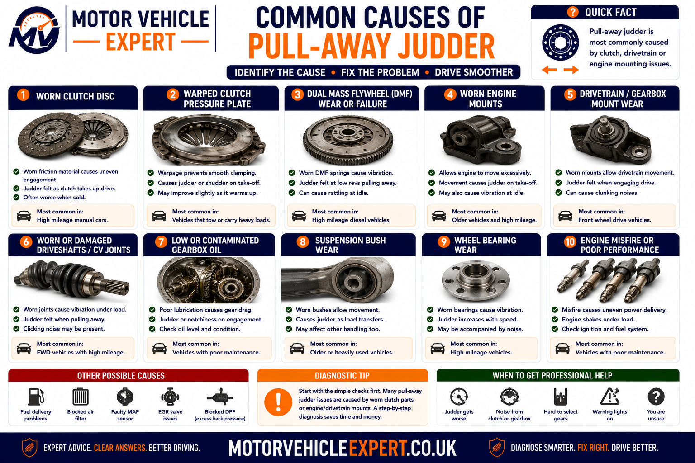
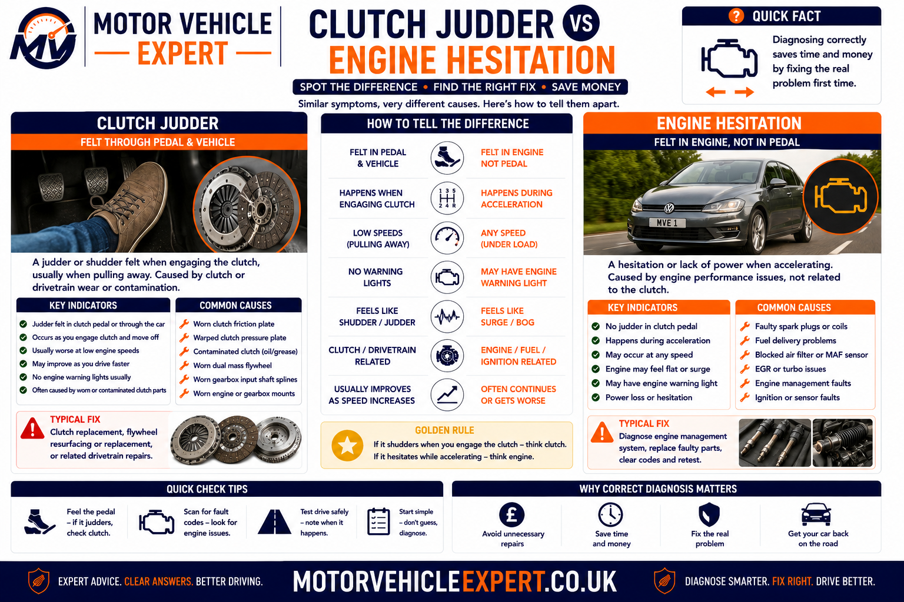
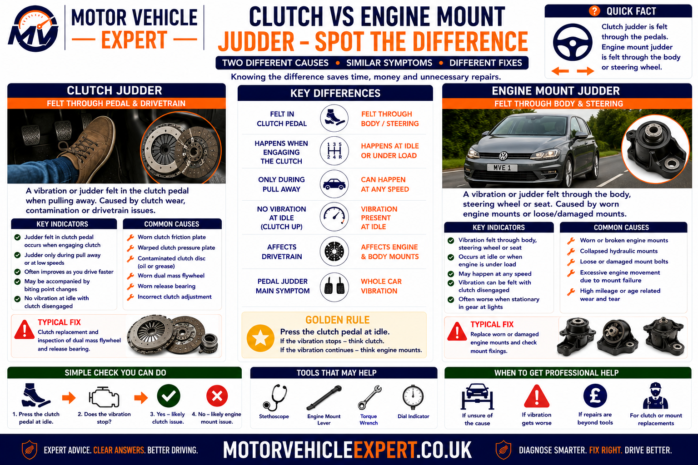
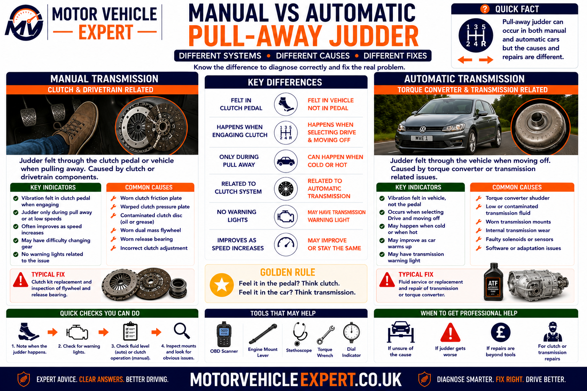
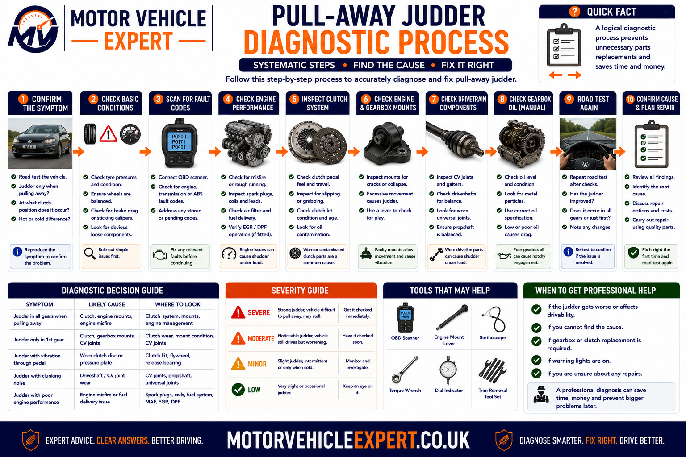
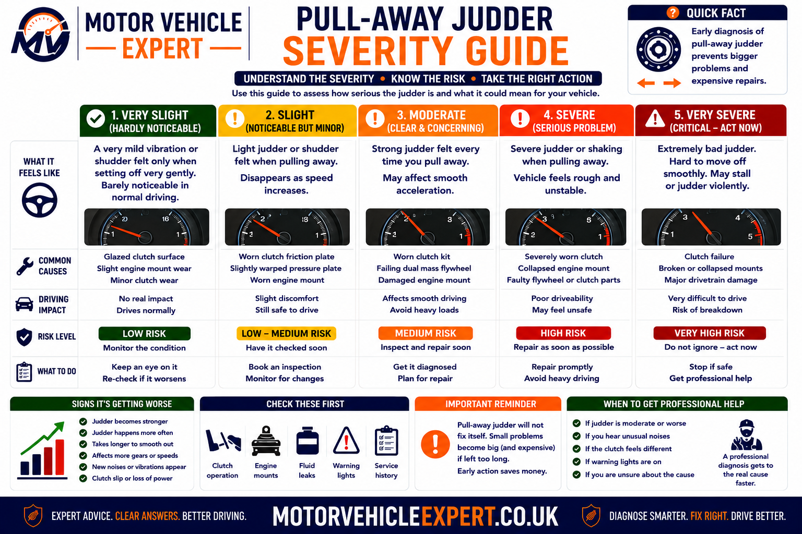
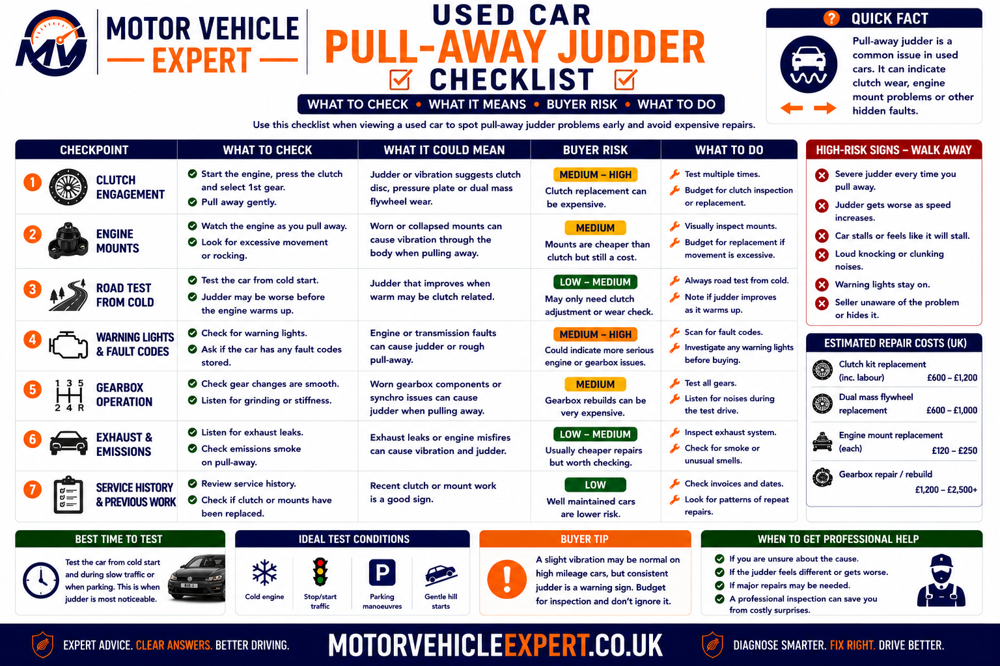

Use the Diagnostic App for Pull-Away Judder
Pull-away judder can begin in the clutch, engine, mounts, driveshafts or transmission. The Motor Vehicle Expert diagnostic app can help you classify the symptom before authorising a clutch, flywheel or gearbox replacement.
1. Identify the Exact Moment
Record whether the judder begins before, during or after clutch engagement or gear selection.
2. Compare Conditions
Note whether the fault changes when cold, warm, uphill, in reverse or under heavier load.
3. Separate Engine From Drivetrain
Compare engine speed, exhaust rhythm, warning lights and powertrain movement.
4. Judge the Urgency
Decide whether careful driving, prompt garage diagnosis or vehicle recovery is appropriate.
Revs that dip, hunt or misfire before clutch engagement suggest an engine-running problem. Smooth engine speed with shudder exactly at the bite point makes clutch, flywheel or mount faults more likely.
Why Does a Car Judder When Pulling Away?
A car judders when pulling away because engine torque is not being transferred smoothly through the clutch, gearbox, mounts and driveshafts. On a manual vehicle, common causes include an uneven clutch friction plate, oil contamination, pressure-plate damage, dual-mass flywheel wear and weak engine or gearbox mounts.
The same sensation can also come from a low-rpm engine misfire, poor throttle response, injector imbalance, driveshaft wear or an automatic or dual-clutch transmission fault. The exact moment the judder starts is the most important diagnostic clue.
Judder at the Bite Point
More likely to involve the clutch friction plate, pressure plate, flywheel or clutch contamination.
Heavy Thump as Load Applies
More likely to involve an engine mount, gearbox mount, driveshaft joint or excessive drivetrain movement.
Revs Dip and Engine Shakes
More likely to involve misfire, airflow, throttle or fuel-delivery problems.
Automatic Judder or Harsh Creep
More likely to involve clutch adaptation, transmission fluid, a dual-clutch system, torque converter or gearbox controls.
Typical Clues
- ✓ Judder occurs exactly as the clutch bites.
- ✓ Hill starts make the symptom stronger.
- ✓ Reverse produces more vibration.
- ✓ A clutch smell or slipping may appear.
- ✓ Engine speed remains otherwise smooth.
- ✓ The fault reduces once the clutch is fully engaged.
Typical Clues
- ✓ Revs dip or hunt before moving.
- ✓ Exhaust rhythm is uneven.
- ✓ A warning light or fault code appears.
- ✓ The engine rocks or thumps visibly.
- ✓ Judder also occurs while already driving.
- ✓ Idle vibration or harsh gear changes are present.
Do not authorise a clutch replacement solely because the car judders when moving off. Engine mounts, low-rpm misfires, driveshaft joints and dual-clutch adaptation faults can create a very similar sensation.
Continued clutch slipping can overheat the friction plate, pressure plate and flywheel. A transmission that engages violently or intermittently loses drive may also become unsafe without warning.
Is Pull-Away Judder Serious?
Pull-away judder can range from a mild clutch-engagement complaint to a serious clutch, flywheel, mounting or transmission fault. The urgency depends on how strongly the vehicle shakes, whether drive is transferred reliably and whether slipping, burning smells, warning messages or violent engagement are present.
A mild repeatable judder that disappears once the vehicle is moving may allow a careful journey to a nearby garage. Severe shaking, loss of drive, repeated stalling or a clutch that slips under acceleration requires prompt inspection because continued use can increase the repair cost significantly.
Mild Bite-Point Judder
Lower ConcernThe vehicle moves away reliably, the symptom is stable and there is no slipping, burning smell or warning message.
Repeated Heavy Shudder
Moderate ConcernStrong vibration occurs on most pull-away attempts or worsens during hill starts and reversing.
Slipping or Harsh Engagement
High ConcernEngine speed rises without matching acceleration, or the transmission engages with a violent thump.
Loss of Drive or Burning Smell
UrgentThe vehicle intermittently loses drive, produces smoke or a strong friction smell, or displays a gearbox warning.
Lower-Risk Conditions
- ✓ The judder is mild and predictable.
- ✓ Drive is transferred reliably.
- ✓ The clutch does not slip once engaged.
- ✓ No burning smell or smoke is present.
- ✓ No warning light or gearbox message appears.
- ✓ The garage is nearby and expecting the vehicle.
High-Risk Conditions
- ! Drive is lost or delayed unpredictably.
- ! The clutch slips severely under acceleration.
- ! A strong burning smell or smoke develops.
- ! The vehicle repeatedly stalls in traffic.
- ! Drive or Reverse engages violently.
- ! A gearbox warning or reduced-function message appears.
Excessive heat can mark or distort the pressure plate and flywheel, contaminate nearby components and turn a clutch-only repair into a clutch-and-flywheel replacement.
Pull-Away Judder vs Engine Hesitation and Drivetrain Vibration
Drivers often use the words judder, hesitation, shudder and vibration to describe the same experience. The timing of the symptom helps determine whether the fault begins in the clutch, engine or drivetrain.
Clutch Judder
Repeated gripping and releasing occurs while the clutch passes through its bite point.
Engine Hesitation
Engine torque dips, surges or responds slowly before or while the vehicle begins moving.
Mounting Shudder
Normal or uneven engine torque makes the complete powertrain move excessively inside the vehicle.
Drivetrain Vibration
Wear in shafts, joints, bearings or gears creates vibration as torque travels towards the wheels.
| Driver description | Typical timing | First systems to consider |
|---|---|---|
| Vehicle shakes exactly at the bite point | During partial clutch engagement | Clutch plate, pressure plate and flywheel |
| Engine coughs before the vehicle moves | Before or as load is first applied | Ignition, injectors, airflow and throttle control |
| Heavy thump followed by movement | At the first application of torque | Engine mounts, gearbox mounts and drivetrain play |
| Judder continues after the clutch is engaged | During acceleration while already moving | Engine misfire, driveshafts and transmission |
| Automatic car shakes while creeping | Low-speed clutch or converter operation | DCT clutches, adaptation, fluid and torque converter |
| Vehicle vibrates at idle before moving | Stationary and under added load | Engine mounts, misfire and idle control |
Typical Pattern
- ✓ Engine speed is smooth before clutch engagement.
- ✓ Judder begins at a repeatable pedal position.
- ✓ The fault disappears once the clutch is fully engaged.
- ✓ Hill starts and reverse make it worse.
- ✓ Clutch slip or friction smell may also occur.
Typical Pattern
- ✓ Engine speed dips, hunts or flares.
- ✓ Exhaust rhythm becomes uneven.
- ✓ Hesitation occurs in more than one gear.
- ✓ The symptom continues while already moving.
- ✓ Warning lights or fault codes may be present.
If the engine stumbles before the clutch bites, investigate engine control first. If the engine remains smooth until the friction surfaces begin transferring torque, the clutch and flywheel move higher on the diagnostic list.
When Does Pull-Away Judder Happen?
Temperature, direction, road gradient, engine speed and vehicle load can expose different faults. Record the exact condition that produces the strongest judder rather than describing only the general sensation.
Only From Cold
Moisture, cold-engine misfire, injector imbalance, stiff mounts or cold transmission-fluid behaviour become more likely.
Only When Fully Warm
Heat-related clutch contamination, flywheel behaviour, transmission adaptation or fluid-pressure faults should be considered.
Only in First Gear
Clutch engagement technique, friction surfaces and initial drivetrain loading become important.
Worse in Reverse
Reversed torque direction may expose mounts, flywheel movement and uneven clutch friction.
Worse Uphill
Increased torque and clutch slip expose weak friction surfaces, mounts and low-rpm engine faults.
Worse With Passengers or Load
Additional vehicle mass increases the torque required to move away and can reveal an early clutch or transmission fault.
After Heavy Traffic
Repeated slipping can overheat a manual or dual-clutch system and alter engagement quality.
After Rain or Washing
Moisture may temporarily alter exposed friction or ignition components, although persistent judder still needs diagnosis.
After Recent Repair
Incorrect clutch installation, poor adaptation, disturbed mounts or unresolved oil leakage should be checked.
A technician needs to know whether the clutch pedal is near the floor, at the bite point or almost released when the judder starts, and whether the engine speed remains stable.
Common Causes of Pull-Away Judder
Pull-away judder can begin at the engine, clutch, flywheel, transmission mountings or final drive. The symptom should be classified before parts are replaced because several different faults can feel almost identical from the driver’s seat.

The exact point at which vibration begins helps separate clutch friction from uneven engine torque and excessive drivetrain movement.
Worn Clutch Friction Plate
Uneven, glazed or damaged friction material can grip and release repeatedly during engagement.
Oil-Contaminated Clutch
Engine or gearbox oil on the friction surfaces produces inconsistent grip and may also cause slipping.
Pressure-Plate Distortion
Uneven clamping force can make the clutch engage in pulses rather than progressively.
Flywheel Hot Spots
Heat damage and surface variation can prevent smooth friction transfer.
Dual-Mass Flywheel Wear
Excess rotational movement and weakened damping can create vibration, rattling and harsh take-up.
Engine-Mount Wear
A split or collapsed mount allows the engine to move excessively when torque is applied.
Gearbox-Mount Wear
Transmission movement can create shudder, thumping and gear-lever movement during take-up.
Low-Rpm Engine Misfire
Weak ignition, injector imbalance or compression loss can make engine torque uneven as load increases.
Throttle or Airflow Fault
Delayed or unstable torque response can make moving away feel jerky even when the clutch is sound.
Driveshaft or CV-Joint Wear
Wear in inner joints, splines and support bearings can create vibration as drive is first transmitted.
Dual-Clutch Transmission Fault
Clutch wear, incorrect adaptation, overheating or mechatronic faults can produce low-speed shudder.
Torque-Converter or Gearbox Fault
Automatic transmission drag, clutch-pack faults or pressure problems can cause harsh or unstable engagement.
A weak engine mount, low-rpm misfire or worn inner CV joint can create a vibration that feels like clutch judder. The complete powertrain must be assessed before the gearbox is removed.
Driver Technique or a Mechanical Fault?
Moving away with very low engine speed, releasing the clutch too quickly or using excessive clutch slip can make a healthy vehicle shudder occasionally. A mechanical fault becomes more likely when the symptom is repeatable with different drivers or occurs despite smooth and appropriate control inputs.
Common Clues
- ✓ The symptom occurs only occasionally.
- ✓ Another driver can move away smoothly.
- ✓ Slightly more appropriate engine speed removes the judder.
- ✓ No slipping, smell, noise or warning is present.
- ✓ Hill-start control improves the result.
- ✓ The symptom has not worsened over time.
Common Clues
- ! Several drivers reproduce the same judder.
- ! The fault occurs at a consistent bite point.
- ! The symptom is becoming progressively worse.
- ! Reverse or hill starts produce severe shaking.
- ! Burning smell, slipping or rattling is present.
- ! Engine or gearbox movement is excessive.
| Test condition | Technique pattern | Mechanical-fault pattern |
|---|---|---|
| Different experienced driver | Vehicle pulls away smoothly | Judder remains repeatable |
| Slightly increased engine speed | Symptom disappears completely | Judder remains or only becomes less obvious |
| Reverse engagement | No consistent difference | Judder or thump becomes stronger |
| Hill start | Improves with correct control | Load exposes strong repeated vibration |
| Condition over time | Stable and occasional | Becoming more frequent or severe |
Using excessive engine speed can temporarily hide judder while overheating the clutch. Diagnosis should reproduce the symptom with normal, controlled operation.
Cold vs Warm Pull-Away Judder
Temperature changes friction, oil viscosity, hydraulic pressure, engine fuelling, mount stiffness and transmission adaptation. A fault that occurs only when cold or only after a long journey provides useful diagnostic direction.
Common Areas to Check
- ✓ Temporary moisture on clutch surfaces.
- ✓ Cold engine misfire or poor fuelling.
- ✓ Diesel glow-plug or injector imbalance.
- ✓ Thick or incorrect transmission fluid.
- ✓ Mountings that are stiff when cold.
- ✓ Clutch friction surfaces affected by contamination.
Common Areas to Check
- ✓ Heat-distorted clutch or flywheel surfaces.
- ✓ Oil contamination spreading as components warm.
- ✓ Dual-clutch overheating or adaptation issues.
- ✓ Torque-converter or transmission pressure faults.
- ✓ Hydraulic seals affected by temperature.
- ✓ Mountings that soften excessively when hot.
| Temperature pattern | Possible cause | Useful workshop check |
|---|---|---|
| Judder only on the first pull-away | Moisture, cold friction or cold engine fault | Reproduce from a genuine overnight cold start |
| Judder lasts until the engine warms | Cold misfire, injector or fluid behaviour | Compare cold live data and engine contribution |
| Judder appears after heavy traffic | Clutch overheating or DCT temperature | Inspect clutch data and thermal behaviour |
| Judder becomes stronger after a long journey | Heat distortion, oil contamination or transmission fault | Road-test until the fault temperature is reached |
| Judder disappears completely when warm | Cold friction, engine or mount characteristic | Inspect before dismissing as normal |
Where possible, leave the vehicle overnight with the garage so the technician can reproduce the first pull-away from cold.
Why Is Pull-Away Judder Worse on Hill Starts?
A hill start requires more torque to overcome vehicle weight and prevent rollback. The clutch normally remains within its slipping phase for longer, which makes uneven friction, flywheel movement, mount wear and low-rpm engine faults more noticeable.
Worn Friction Plate
Reduced or uneven friction material may struggle to transfer the additional hill-start load smoothly.
Glazed Clutch Surface
Overheating can create a hard polished surface that alternates between slipping and gripping.
Pressure-Plate Weakness
Uneven clamping force becomes more obvious as greater torque passes through the clutch.
Dual-Mass Flywheel Wear
Excess rotational movement can amplify vibration at low speed and high load.
Engine or Gearbox Mount
Increased torque twists the powertrain farther and can expose weak mountings.
Low-Rpm Engine Weakness
Misfire, poor throttle response or low boost can make the engine struggle as the clutch engages.
Hill-Start Clues
- ✓ Judder begins at the same bite point.
- ✓ The clutch requires excessive slipping.
- ✓ A friction smell appears afterwards.
- ✓ Revs may rise without proportional movement.
- ✓ The symptom disappears after full engagement.
Hill-Start Clues
- ✓ Engine speed dips sharply.
- ✓ The engine hesitates or nearly stalls.
- ✓ A heavy thump accompanies torque application.
- ✓ Judder continues after the clutch is engaged.
- ✓ Similar hesitation occurs in higher gears.
Use the parking brake or approved hill-hold system. Holding the car stationary at the bite point creates unnecessary heat and can accelerate clutch and flywheel damage.
Why Is Pull-Away Judder Worse in Reverse?
Reverse changes the direction of torque through the engine, gearbox and mountings. Low-speed reversing also commonly requires more clutch slip and finer control, making uneven friction and drivetrain movement easier to feel.
Torque Direction Changes
Engine and gearbox mountings are loaded in the opposite direction from normal forward pull-away.
Greater Clutch Slip
Parking and reversing manoeuvres often keep the clutch near its bite point for longer.
Uneven Friction Surfaces
Clutch or flywheel hot spots may react differently when torque is applied in reverse.
Weak Torque-Reaction Mount
A lower mount may control forward torque better than reverse movement when worn.
Driveshaft or Spline Play
Reversing the direction of load can take up clearance suddenly and create a knock or shudder.
Dual-Clutch Reverse Operation
DCT systems may use a particular clutch and adaptation strategy that makes reverse faults more noticeable.
| Reverse symptom | Possible cause | Recommended check |
|---|---|---|
| Judder only while the clutch is slipping | Clutch or flywheel friction fault | Inspect complete clutch assembly |
| Heavy thump as reverse load applies | Engine mount, gearbox mount or driveline play | Observe controlled powertrain movement |
| Engine nearly stalls in reverse | Low-rpm engine or idle-control fault | Check engine contribution and throttle response |
| Automatic vehicle shudders while reversing slowly | DCT clutch, adaptation or transmission control | Read gearbox data and compare clutch operation |
| Click or knock when direction changes | CV joint, spline, mount or differential play | Inspect drivetrain free play and security |
A large difference between the two directions can help expose mount or drivetrain movement, while similar bite-point judder in both directions supports clutch friction or flywheel diagnosis.
A vehicle that jumps, engages unpredictably or loses drive during reversing may be unsafe around people, walls and parked vehicles. Arrange professional assessment instead of repeatedly reproducing the fault.
Clutch Friction-Plate Faults That Cause Pull-Away Judder
The clutch friction plate transfers engine torque to the gearbox as the driver releases the clutch pedal. A healthy clutch should increase its grip progressively. If the friction material grips, releases and grips again, the complete powertrain can shake as the vehicle moves away.
Friction-plate judder is normally strongest while the clutch is partially engaged. It often reduces or disappears once the pedal is fully released and the clutch has locked the engine and gearbox together.
Uneven Friction Material
Different areas of the clutch plate may produce different levels of grip as they contact the flywheel and pressure plate.
Glazed Friction Surface
Excessive heat can harden and polish the friction material, making engagement abrupt and inconsistent.
Worn Friction Linings
Reduced lining thickness can alter clamping behaviour and may eventually lead to clutch slipping.
Distorted Clutch Disc
Heat, incorrect installation or manufacturing faults can prevent the disc contacting both surfaces evenly.
Damaged Torsion Springs
Worn or broken damping springs within the clutch hub can allow harsh torque transfer and rattling.
Hub or Spline Wear
Wear or poor movement on the gearbox input-shaft splines can interfere with smooth clutch engagement and release.
Incorrect Clutch Specification
An unsuitable plate thickness, friction material or hub design may produce poor engagement after replacement.
Poor Clutch Alignment
Incorrect alignment during installation can damage the hub, input shaft or friction plate as the gearbox is refitted.
Overheated New Clutch
Excessive slipping immediately after replacement can damage friction surfaces before normal bedding has occurred.
Common Diagnostic Clues
- ✓ Judder begins at a repeatable bite point.
- ✓ Engine speed remains smooth before engagement.
- ✓ Hill starts make the symptom stronger.
- ✓ Reverse also produces repeated vibration.
- ✓ The fault stops after full clutch engagement.
- ✓ Clutch slip or friction smell may also develop.
Continue Diagnosis If...
- ! The engine runs unevenly before the clutch bites.
- ! Vibration continues in several gears.
- ! A heavy single thump replaces repeated judder.
- ! The vehicle vibrates strongly at idle.
- ! Warning lights or engine fault codes are present.
- ! Acceleration produces driveshaft-type vibration.
| Clutch behaviour | Possible interpretation | Recommended next step |
|---|---|---|
| Judder only at partial engagement | Friction-surface or flywheel fault | Inspect complete clutch assembly |
| High bite point with slipping | Worn friction material or weak clamp load | Confirm slip and clutch condition |
| Low or inconsistent bite point | Hydraulic, cable or release-system fault | Inspect clutch actuation |
| Judder began after clutch replacement | Installation, specification or unresolved leak | Review parts and fitting procedure |
| Judder plus rattling during start or shutdown | Dual-mass flywheel wear | Measure flywheel condition and movement |
| Judder plus visible powertrain movement | Engine or gearbox mounting fault | Assess mounts before gearbox removal |
Replacing only the friction plate while reusing a damaged pressure plate or flywheel can leave the original judder unchanged. The release mechanism and source of any contamination must also be checked.
Can Oil Contamination Make a Clutch Judder?
Yes. Engine oil, gearbox oil or excessive grease on the clutch friction surfaces can make engagement unpredictable. One part of the clutch may slip while another grips, creating repeated vibration at the bite point.
Cleaning the outside of the bellhousing does not solve internal contamination. The leak source must be located, repaired and the affected friction components assessed once the gearbox has been removed.
Rear Crankshaft Seal Leak
Engine oil can travel from the rear of the crankshaft onto the flywheel and clutch assembly.
Gearbox Input-Shaft Seal Leak
Transmission oil can migrate along the input shaft and contaminate the clutch plate.
Hydraulic Release-Bearing Leak
On vehicles with a concentric slave cylinder, brake fluid can leak inside the bellhousing.
Excessive Spline Grease
Too much or unsuitable grease can be thrown onto friction surfaces as the clutch rotates.
Engine-Oil Mist
A small leak may spread gradually and create intermittent judder before severe slipping develops.
Previous Leak Not Repaired
Installing a new clutch without correcting the seal fault can contaminate the replacement components quickly.
What May Be Present
- ✓ Judder changes as the clutch warms.
- ✓ Clutch slip develops under heavier load.
- ✓ Oil appears near the bellhousing joint.
- ✓ Engine or gearbox oil level falls.
- ✓ A recent clutch failed unusually quickly.
- ✓ Friction smell may mix with an oil smell.
What the Garage Should Do
- ✓ Confirm the fluid type and leak source.
- ✓ Repair the failed seal or hydraulic component.
- ✓ Replace contaminated friction components.
- ✓ Inspect the flywheel and pressure plate.
- ✓ Clean the bellhousing appropriately.
- ✓ Verify oil levels and clutch operation afterwards.
A leaking concentric slave cylinder can eventually prevent the clutch from disengaging, while engine or gearbox oil can destroy the replacement clutch if the source is not repaired.
Pressure-Plate Faults and Uneven Clutch Engagement
The pressure plate clamps the clutch disc against the flywheel. Its diaphragm spring and friction surface must apply an even force around the complete clutch assembly. Distortion or localised wear can create repeated gripping and releasing.
Distorted Pressure Surface
Heat can create high and low areas that prevent uniform contact with the clutch plate.
Weak Diaphragm Spring
Reduced or uneven clamp load can produce slipping, judder and inconsistent pedal feel.
Damaged Diaphragm Fingers
Uneven wear from the release bearing can disturb disengagement and clamping pressure.
Heat Checking and Hot Spots
Repeated overheating can mark the pressure surface and create abrupt friction changes.
Incorrect Bolt Tightening
Uneven or incorrect tightening during installation can distort the pressure plate.
Incorrect Clutch Kit
A pressure plate with unsuitable clamp load or geometry can produce poor engagement and release.
| Pressure-plate symptom | Possible fault | Related check |
|---|---|---|
| Judder with otherwise stable engine speed | Uneven pressure or friction surface | Inspect plate, flywheel and friction disc |
| Heavy or inconsistent clutch pedal | Diaphragm, release or hydraulic problem | Assess complete actuation system |
| Slip develops under high torque | Low clamp load or worn friction material | Confirm clutch capacity and condition |
| Judder began directly after repair | Installation, torque or component mismatch | Review fitting procedure and part numbers |
| Pedal pulsation during engagement | Distortion or release-system irregularity | Inspect pressure plate, bearing and flywheel |
External inspection cannot confirm the condition of the internal friction face and diaphragm. Diagnosis should justify gearbox removal before labour-intensive dismantling begins.
Release Bearing, Cable and Hydraulic Clutch Faults
The release system controls how quickly and evenly clamping force is removed from or returned to the clutch disc. Sticking, misalignment or inconsistent hydraulic movement can make the bite point difficult to control and may contribute to judder.
Worn Release Bearing
Bearing wear commonly causes noise when the clutch pedal is pressed and can damage diaphragm fingers.
Concentric Slave-Cylinder Fault
Leakage or sticking inside the bellhousing can produce poor release and contaminate the clutch.
Clutch Master-Cylinder Fault
Internal seal bypass can make pedal travel and bite point inconsistent.
Air in the Hydraulic Circuit
Compressible air can delay release movement and create an inconsistent pedal response.
Damaged Clutch Cable
Fraying, stretching or seizure can prevent smooth release on cable-operated systems.
Incorrect Cable Adjustment
Where adjustment is provided, incorrect free play can affect release, bite point and clutch life.
Release-Fork Wear
Worn pivots, contact points or fork distortion can create uneven bearing movement.
Guide-Tube Wear
A damaged guide sleeve can make the release bearing stick or move off-centre.
Pedal Mechanism Wear
Bush, spring and pivot faults can alter pedal travel without an internal clutch failure.
What the Driver May Notice
- ✓ Bite point changes between journeys.
- ✓ Pedal feels soft, sticky or unusually heavy.
- ✓ Gear selection is difficult while stationary.
- ✓ Noise appears when the pedal is pressed.
- ✓ The vehicle creeps with the pedal fully depressed.
- ✓ Fluid level falls or leakage is visible.
How the System Is Assessed
- ✓ Pedal travel and bite-point consistency.
- ✓ Master and slave-cylinder leakage.
- ✓ Hydraulic pressure and bleeding condition.
- ✓ Cable movement and adjustment where applicable.
- ✓ Release-bearing noise and operation.
- ✓ Gear engagement with the engine running and stopped.
Because the component is commonly positioned around the gearbox input shaft, it is normally sensible to inspect the clutch and flywheel while access is available.
Can a Dual-Mass Flywheel Cause Pull-Away Judder?
Yes. A dual-mass flywheel uses two main rotating sections, springs, bearings and friction-control components to reduce engine torsional vibration before it reaches the gearbox. Wear can allow excessive rotational or rocking movement.
A damaged dual-mass flywheel can produce judder during clutch engagement, rattling at idle, vibration at low engine speed and noise when the engine starts or stops. However, those symptoms can overlap with clutch, mount and engine-running faults.
Excess Rotational Free Play
Worn internal springs and friction components allow the two masses to rotate too far relative to each other.
Rocking or Axial Movement
Internal bearing wear can allow movement outside the permitted specification.
Weak Internal Damping
Engine torque pulses are transferred more harshly into the clutch and gearbox.
Heat Damage
Prolonged clutch slipping can overheat and discolour the flywheel friction surface.
Internal Grease Leakage
Excessive grease loss may indicate overheating or internal failure, depending on flywheel design.
Broken Internal Springs
Mechanical damage can create knocking, rattling and poor torsional control.
Starter-Ring Damage
Damaged teeth can create starting noise but do not alone prove failure of the damping mechanism.
Incorrect Solid-Flywheel Conversion
An unsuitable conversion can increase gearbox rattle, vibration and driveline harshness.
Incorrect Replacement Flywheel
Wrong specification, installation or bolt procedure can cause serious vibration and component damage.
Common Symptoms
- ✓ Rattling occurs at idle.
- ✓ Noise appears during engine shutdown.
- ✓ Low-rpm acceleration produces vibration.
- ✓ Pull-away judder worsens under load.
- ✓ Clutch replacement alone did not solve the fault.
- ✓ Measured movement exceeds specification.
Do Not Overlook
- ! Engine or gearbox mount collapse.
- ! Uneven engine combustion.
- ! Crankshaft pulley or accessory-drive noise.
- ! Gearbox input-shaft bearing noise.
- ! Incorrect clutch installation.
- ! Exhaust contact with the body.
| Flywheel evidence | What it may indicate | Important limitation |
|---|---|---|
| Rattle at idle that changes with clutch pedal | DMF or gearbox-input noise | Pedal response alone does not identify the component |
| Clunk during engine shutdown | Excess flywheel or mounting movement | Mounts and exhaust contact must also be checked |
| Visible heat marks after removal | Clutch slip or friction overheating | Surface appearance must be assessed against specification |
| Rotational movement exceeds limit | Internal damping wear | Use the manufacturer’s correct measurement method |
| Grease or debris inside bellhousing | Possible internal flywheel deterioration | Confirm the material and source before replacement |
A dual-mass flywheel is designed to have controlled movement. Some free play is normal. Replacement should be based on measured rotational travel, rocking, friction and condition—not movement alone.
Engine and Gearbox Mounts That Cause Pull-Away Judder
Engine and gearbox mounts support the powertrain while controlling its movement as torque is applied. A worn mount can allow the engine and transmission to twist, lift or strike surrounding components during pull-away.
Mount-related vibration is often felt as a heavy shudder or thump rather than a fine repeated clutch vibration. It may change significantly between first gear and reverse because the direction of torque reverses.
Split Rubber Mount
Torn rubber allows excessive powertrain travel as load changes.
Collapsed Mount
Loss of mount height can allow brackets, exhausts and body components to contact one another.
Leaking Hydraulic Mount
Fluid loss reduces vibration damping and can leave visible wet residue near the mount.
Worn Gearbox Mount
Transmission movement may create gear-lever movement, knocks and harsh take-up.
Torque-Reaction Mount Wear
Lower torque mounts control fore-and-aft movement and commonly reveal wear during first gear and reverse engagement.
Vacuum-Controlled Mount Fault
Vacuum pipes, valves and control faults can prevent variable mount stiffness from operating correctly.
Active Mount Fault
Electronically controlled mounts may fail mechanically or lose their commanded vibration-control function.
Loose Mounting Bracket
Incorrect fastener torque, damaged threads or cracked brackets can permit dangerous movement.
Incorrect Replacement Mount
A poor-quality or overly stiff mount can transmit excessive vibration even when securely fitted.
Common Diagnostic Clues
- ✓ A heavy thump accompanies torque application.
- ✓ First gear and reverse feel noticeably different.
- ✓ The gear lever moves strongly under load.
- ✓ Vibration is also present at idle.
- ✓ Exhaust or intake components contact the body.
- ✓ Excess powertrain movement is visible during safe testing.
Common Diagnostic Clues
- ✓ Repeated judder occurs at the clutch bite point.
- ✓ Engine and gearbox movement remains controlled.
- ✓ Vibration stops after complete engagement.
- ✓ Hill starts expose friction slip or smell.
- ✓ No heavy single knock is present.
- ✓ Mounts remain at the correct height and condition.
Do not stand in front of the vehicle, reach into the engine bay or place anyone near the wheels while clutch or transmission load is applied. A trained technician should use proper restraint and observation procedures.
Clutch Judder vs Engine Hesitation
Clutch judder and engine hesitation can both make a vehicle shake during pull-away. The key distinction is whether engine torque is already unstable before the clutch begins transferring drive.

Smooth engine speed followed by vibration at the bite point supports clutch diagnosis, while rev fluctuation or uneven combustion before engagement supports an engine-running fault.
More Likely When
- ✓ Revs remain steady before engagement.
- ✓ Judder begins at a precise bite point.
- ✓ The symptom stops once fully engaged.
- ✓ Uphill and reverse operation make it worse.
- ✓ No engine warning or misfire evidence appears.
- ✓ Friction smell or clutch slip may accompany the fault.
More Likely When
- ✓ Revs dip, hunt or respond slowly.
- ✓ Exhaust rhythm becomes uneven.
- ✓ The engine shakes before the bite point.
- ✓ Hesitation continues in other gears.
- ✓ Warning lights or fault codes may appear.
- ✓ Fuel economy or general performance worsens.
| Diagnostic clue | Clutch-judder pattern | Engine-hesitation pattern |
|---|---|---|
| Engine speed before engagement | Usually stable | May dip, hunt or flare |
| Exhaust rhythm | Usually even | May become uneven |
| Exact start of vibration | At the clutch bite point | Before or during torque request |
| After full clutch engagement | Judder normally stops | Hesitation may continue |
| Fault-code evidence | Usually absent | May show misfire, airflow or fuel faults |
| Hill-start effect | Greater friction load increases judder | Low-rpm torque weakness increases hesitation |
An engine misfire can make a worn clutch feel worse, while weak mountings can amplify either fault. Diagnosis should identify every abnormal stage rather than stopping at the first possible cause.
Clutch Judder vs Engine-Mount Judder
Clutch and mounting faults both appear as the drivetrain begins carrying torque. Clutch faults normally create repeated vibration during partial engagement, while mount faults allow a larger movement or impact as load changes direction.

Repeated bite-point vibration supports clutch diagnosis, while a single heavy movement, thump or large directional difference supports a mounting or drivetrain problem.
Typical Pattern
- ✓ Repeated rapid shudder at partial engagement.
- ✓ Bite point is repeatable.
- ✓ Engine remains smooth beforehand.
- ✓ The vibration stops after lock-up.
- ✓ Hill starts increase the symptom.
- ✓ Clutch smell or slipping may be present.
Typical Pattern
- ✓ Heavy thump or lurch as torque applies.
- ✓ First gear and reverse feel different.
- ✓ Gear lever moves noticeably.
- ✓ Vibration may also be present at idle.
- ✓ Exhaust or hoses may contact surrounding parts.
- ✓ Visible engine movement exceeds normal control.
| Comparison point | Clutch fault | Mount fault |
|---|---|---|
| Type of movement | Repeated fine-to-heavy shudder | Large movement, knock or lurch |
| Pedal relationship | Closely linked to the bite point | Linked mainly to torque direction and load |
| Idle vibration | Usually unrelated | May also be present |
| Reverse comparison | Often judders similarly or more strongly | May produce a different directional thump |
| Clutch fully engaged | Judder normally ends | Movement may recur during acceleration changes |
| Physical evidence | Requires internal clutch inspection | Collapse, splitting or leakage may be visible |
A weak mount may amplify clutch judder without creating it. The repair should address the original vibration source and any mounting that can no longer control the powertrain correctly.
Can an Engine Misfire Feel Like Clutch Judder?
Yes. Pulling away places an immediate load on the engine. If one cylinder produces less torque because of weak ignition, poor fuelling or low compression, the uneven combustion can make the complete vehicle shake as the clutch engages.
Unlike a pure clutch fault, engine-related judder may begin before the clutch reaches its bite point and may continue after the vehicle is moving. The rev counter, exhaust rhythm, warning lights and live diagnostic data can help separate uneven combustion from friction judder.
Worn Spark Plugs
Excessive gap, fouling or incorrect specification can weaken combustion as engine load rises.
Weak Ignition Coil
A coil may operate at idle but break down as greater voltage is required during pull-away.
Injector Imbalance
Restricted, leaking or electrically weak injectors can make cylinder torque uneven at low engine speed.
Low Compression
Valve, piston, bore or head-gasket faults can reduce one cylinder’s contribution under load.
Vacuum or Intake Leak
Unmetered air can weaken the mixture and disturb low-speed engine response.
EGR Valve Fault
Excess exhaust-gas flow at low speed can cause rough running, hesitation and stalling.
Diesel Glow-System Fault
Weak glow plugs or control faults can produce cold combustion imbalance during the first pull-away.
Fuel-Pressure Fault
Low or unstable pressure can delay torque production as the accelerator is applied.
Incorrect Engine Timing
Mechanical or variable-valve-timing faults can reduce smooth low-rpm torque.
Common Evidence
- ✓ Engine speed dips or fluctuates.
- ✓ Exhaust rhythm becomes uneven.
- ✓ The engine shakes before clutch engagement.
- ✓ Hesitation continues in higher gears.
- ✓ An engine warning light may appear.
- ✓ Misfire counters identify cylinder imbalance.
Common Evidence
- ✓ Engine speed remains stable.
- ✓ Exhaust rhythm remains even.
- ✓ Vibration begins at one pedal position.
- ✓ The symptom stops after full engagement.
- ✓ No engine codes or warning lights appear.
- ✓ Hill starts increase friction-related symptoms.
A flashing warning commonly indicates active misfire severe enough to overheat and damage the catalytic converter. Reduce load, stop safely and arrange diagnosis or recovery.
Throttle and Fuel Faults That Cause Jerky Pull-Away
Smooth pull-away requires engine torque to rise progressively as the accelerator is pressed. Delayed throttle response, incorrect airflow measurement or unstable fuel delivery can make the engine dip, hesitate and then surge while the clutch is engaging.
Dirty Throttle Body
Deposits can restrict low-angle airflow and make initial torque response inconsistent.
Throttle Adaptation Error
Incorrect learned positions can disturb idle control and the transition from idle to acceleration.
Accelerator-Pedal Sensor Fault
Irregular pedal signals can create delayed or unstable torque requests.
MAF Sensor Error
Incorrect airflow information can produce poor fuelling and weak low-speed response.
MAP Sensor or Port Restriction
Contamination can prevent accurate manifold-pressure measurement.
Fuel-Filter Restriction
Restricted flow can make pressure fall as engine load first increases.
Weak Fuel Pump
A worn low-pressure or high-pressure pump can delay torque and cause hesitation.
Injector Correction Imbalance
Large corrections may indicate uneven combustion but must be interpreted with compression and fuel-pressure evidence.
Turbo or Boost-Control Delay
Severe low-speed boost or airflow faults can weaken diesel and turbocharged petrol pull-away response.
| Engine-response pattern | Possible cause | Useful diagnostic check |
|---|---|---|
| Revs dip as accelerator is first pressed | Throttle, airflow or fuelling fault | Compare requested and actual torque data |
| Engine hesitates then surges | Delayed airflow or fuel-pressure response | Graph throttle, airflow and pressure signals |
| Fault is strongest immediately after cold start | Temperature, injector or cold-fuelling fault | Review cold live data and corrections |
| Judder also occurs in higher gears | Engine torque rather than clutch friction | Road-test under controlled engine load |
| Cleaning temporarily improves response | Deposit or adaptation influence | Confirm root cause and complete relearn |
Air leaks, blocked ports, wiring resistance and fuel-pressure faults can produce sensor-related codes even when the sensor itself remains serviceable.
Can Driveshaft or CV-Joint Wear Cause Pull-Away Judder?
Yes. Torque passes through the differential, driveshafts and CV joints before reaching the wheels. Excessive clearance, worn bearings or damaged joints can create vibration, knocking or shudder when drive is first applied.
Inner CV-joint wear is especially relevant where vibration continues during acceleration after the clutch is fully engaged. Outer CV joints more commonly click during steering lock, although severe wear can also affect take-up.
Inner CV-Joint Wear
Worn tracks and rollers can create shudder under acceleration and initial torque application.
Outer CV-Joint Wear
Commonly produces clicking on steering lock and may also contribute to drivetrain free play.
Driveshaft Spline Wear
Clearance at the hub, gearbox or intermediate connection can produce a knock as drive changes direction.
Intermediate Support Bearing
Bearing or mounting wear can allow shaft movement and acceleration vibration.
Bent Driveshaft
Impact or incorrect handling can create rotational vibration that increases with road speed.
Split CV Boot
Grease loss and contamination accelerate joint wear and eventual failure.
Incorrect Shaft Length
An unsuitable replacement shaft can operate at the wrong plunge position or joint angle.
Loose Hub Nut or Fastener
Incorrect torque can damage splines, bearings and wheel security.
Differential Backlash
Excessive internal clearance can add to the knock when drive direction changes.
Typical Clues
- ✓ Vibration continues after clutch engagement.
- ✓ Acceleration makes the shudder stronger.
- ✓ A knock occurs when drive direction changes.
- ✓ Clicking appears on steering lock.
- ✓ CV boots are split or grease is visible.
- ✓ The fault changes with suspension height or load.
Typical Clues
- ✓ Judder exists only at partial engagement.
- ✓ Acceleration becomes smooth after lock-up.
- ✓ No clicking or shaft-related noise appears.
- ✓ Steering angle does not affect the symptom.
- ✓ Friction smell or clutch slip is present.
- ✓ Shaft boots and joints remain serviceable.
Stop driving if a driveshaft joint knocks severely, a shaft appears loose or drive is transmitted intermittently. Complete joint or spline failure can cause loss of drive and secondary damage.
Why Does an Automatic Car Judder When Moving Off?
Automatic vehicles can judder during initial movement because of engine-running faults, damaged mountings, torque-converter problems, worn internal clutch packs, incorrect fluid, hydraulic pressure faults or transmission-control issues.
The first distinction is whether the vehicle uses a conventional torque-converter automatic, a dual-clutch transmission, a CVT or another automated design. Each system transfers pull-away torque differently and requires a different diagnostic approach.
Incorrect Transmission Fluid
Wrong specification, level or degraded fluid can disturb hydraulic pressure and clutch operation.
Low Fluid Level
Leakage or incorrect filling can cause delayed engagement, slipping and pressure instability.
Valve-Body Fault
Worn valves or solenoids can create delayed, harsh or unstable clutch application.
Internal Clutch-Pack Wear
Worn friction plates can slip, grab or create shudder as the transmission applies drive.
Transmission Adaptation Error
Incorrect learned clutch pressures or fill times can affect engagement quality.
Engine or Gearbox Mount
Excessive powertrain movement can make normal transmission engagement feel harsh.
Engine Torque Fault
Misfire or poor throttle response can create judder even when the transmission is operating correctly.
Electrical or Solenoid Fault
Wiring, speed-sensor and pressure-control faults can disturb clutch and converter operation.
Software or Calibration Issue
Manufacturer updates may address specific engagement or low-speed drivability complaints.
| Automatic symptom | Possible cause | Diagnostic direction |
|---|---|---|
| Delay followed by harsh engagement | Fluid pressure, valve body or clutch fill fault | Check fluid and pressure-related data |
| Judder while creeping | DCT clutch, converter or mount issue | Identify transmission design first |
| Fault becomes worse when hot | Fluid, clutch, seal or pressure fault | Test at the correct operating temperature |
| Drive and Reverse behave differently | Specific clutch circuit, mount or internal fault | Compare commanded and actual engagement |
| Judder accompanies engine hesitation | Engine torque-control fault | Diagnose engine before gearbox removal |
Many automatic gearboxes require a specific fluid temperature, engine-running condition, selector sequence and level plug procedure. Incorrect checking can create a false result or damage the transmission.
Why Does a Dual-Clutch Gearbox Judder at Low Speed?
A dual-clutch transmission uses electronically controlled clutches to move the vehicle from rest and change gears. During creeping, parking and hill starts, the system may operate the clutches in a controlled slipping phase similar to a manual clutch.
Wear, overheating, contamination, incorrect adaptation, actuator faults, mechatronic problems and excessive flywheel movement can all produce low-speed shudder. Software adjustment should not be used to conceal mechanically worn clutches.
Dry-Clutch Wear
Friction wear and surface variation commonly affect creeping and initial take-up.
Wet-Clutch Wear
Friction material, oil condition and hydraulic pressure can influence engagement.
Incorrect Clutch Adaptation
Learned bite points and pressure values may no longer match the clutch condition.
Clutch Overheating
Prolonged creeping or holding the vehicle on the accelerator can overheat the clutch system.
Mechatronic Fault
Hydraulic, electronic or solenoid faults can make clutch control inconsistent.
Clutch Actuator Fault
Position and force-control problems can produce harsh, delayed or repeated engagement.
Dual-Mass Flywheel Wear
Excess rotational movement can amplify DCT clutch vibration and low-speed rattle.
Incorrect Gearbox Oil
Wet-clutch and mechatronic systems require the exact approved lubricant and filling process.
Software-Level Mismatch
Calibration problems may affect known drivability issues but should be confirmed against mechanical condition.
Only When...
- ✓ Clutch wear remains within specification.
- ✓ No contamination or overheating damage is present.
- ✓ Actuators and mechatronics operate correctly.
- ✓ Correct software and fluid are present.
- ✓ The manufacturer’s procedure is followed.
- ✓ The result is verified with clutch data and road testing.
When...
- ! Clutch wear values exceed limits.
- ! Judder returns immediately after adaptation.
- ! Overheating warnings occur repeatedly.
- ! Clutch slip or loss of drive is present.
- ! Actuator or mechatronic faults are stored.
- ! Flywheel movement exceeds specification.
Continued slipping can overheat and damage the clutches, flywheel and mechatronic system. Use the brake to control the vehicle and arrange diagnosis.
Torque-Converter and Automatic Gearbox Faults
A conventional torque converter transfers engine torque through transmission fluid before mechanical clutch elements apply inside the gearbox. Pull-away problems may therefore involve converter operation, hydraulic pressure, internal clutches or engine mounts.
Converter Internal Damage
Stator, turbine or internal bearing faults can produce noise, vibration and poor torque transfer.
Lock-Up Clutch Fault
Converter lock-up normally operates after pull-away, but clutch contamination can also create broader shudder symptoms.
Low Hydraulic Pressure
Pump, seal, filter or valve-body faults can delay clutch application.
Forward Clutch Wear
Internal friction wear can create slipping or unstable Drive engagement.
Reverse Clutch or Brake Fault
A separate internal element may explain why Reverse behaves differently from Drive.
Valve-Body Wear
Hydraulic leakage around worn valves can produce pressure and fill-time errors.
Contaminated Fluid
Burnt or debris-filled fluid may indicate internal clutch or converter deterioration.
Transmission Cooler Fault
Overheating or coolant contamination can cause widespread transmission damage.
Engine-Mount Amplification
Weak mountings can make normal converter loading feel like a serious gearbox shudder.
Shudder at a steady road speed under light throttle may relate to lock-up clutch operation, while vibration from rest requires assessment of initial converter, clutch and mounting behaviour.
Manual vs Automatic Pull-Away Judder
Manual, dual-clutch, CVT and conventional automatic transmissions use different methods to begin moving the vehicle. Diagnosis must match the transmission design rather than applying manual-clutch assumptions to every vehicle.

Manual vehicles centre diagnosis on clutch friction and flywheel condition, while automatic diagnosis depends on whether drive is transferred by a converter, belt system or controlled clutch pack.
Primary Areas
- ✓ Clutch friction plate.
- ✓ Pressure plate.
- ✓ Flywheel or dual-mass flywheel.
- ✓ Release bearing and hydraulics.
- ✓ Engine and gearbox mounts.
- ✓ Low-rpm engine torque.
Primary Areas
- ✓ Dry or wet clutch wear.
- ✓ Clutch adaptation.
- ✓ Actuators and mechatronics.
- ✓ Gearbox oil where applicable.
- ✓ Dual-mass flywheel.
- ✓ Thermal history.
Primary Areas
- ✓ Fluid condition and level.
- ✓ Torque converter.
- ✓ Valve body and solenoids.
- ✓ Internal clutch packs.
- ✓ Adaptation and pressure data.
- ✓ Engine and transmission mounts.
| Transmission type | Typical pull-away control | Common judder source | Key test |
|---|---|---|---|
| Manual | Driver-operated dry clutch | Friction, flywheel or mount fault | Compare exact clutch bite-point behaviour |
| Dry dual-clutch | Computer-controlled dry clutches | Wear, heat or adaptation | Review clutch values and thermal history |
| Wet dual-clutch | Oil-cooled controlled clutches | Clutch, oil or mechatronic fault | Check fluid and commanded clutch pressure |
| Torque-converter automatic | Fluid converter and internal clutches | Pressure, converter or clutch-pack fault | Compare Drive and Reverse engagement data |
| CVT | Launch clutch or converter with variable ratio | Launch device, fluid or pressure fault | Identify exact CVT design and fault data |
Vehicles described simply as automatic may use fundamentally different clutch and hydraulic systems. Use the exact gearbox code and manufacturer procedure.
How a Garage Diagnoses Pull-Away Judder
A professional diagnosis should reproduce the complaint under the correct temperature, gradient, direction and load. The technician then separates engine torque variation from clutch friction, excessive mounting movement and transmission faults.

The correct process confirms the first abnormal stage before labour-intensive clutch or gearbox removal is authorised.
1. Confirm the Symptom
Establish whether the complaint is repeated judder, a single thump, engine hesitation, slipping or harsh engagement.
2. Reproduce the Conditions
Compare cold, warm, first gear, reverse, hill starts and vehicle load.
3. Check Engine Smoothness
Observe rev stability, exhaust rhythm, misfire data and torque response before engagement.
4. Assess the Bite Point
Record the pedal position and whether vibration begins during partial clutch engagement.
5. Inspect Powertrain Mounts
Check condition, height, leakage, brackets and controlled movement.
6. Check Driveshafts
Inspect joints, splines, support bearings, boots and acceleration vibration.
7. Read Transmission Data
Review fault codes, clutch values, temperatures, pressures and adaptation information where available.
8. Repair and Verify
Repeat the original pull-away conditions and confirm smooth operation after repair.
Clutch access is labour intensive. Engine-running faults, mountings and external drivetrain components should be assessed before dismantling begins.
What a Mechanic Checks for Pull-Away Judder
The inspection should cover every stage from engine torque production to wheel movement. Concentrating only on the clutch can miss mount, engine, driveshaft and automatic-transmission faults.
Engine Idle and Torque Response
Check rev stability, misfire, airflow, fuel pressure and throttle response.
Clutch Pedal and Bite Point
Assess travel, feel, consistency, slip and exact judder timing.
Hydraulic or Cable Operation
Inspect master cylinder, slave cylinder, fluid, cable and release action.
Engine and Gearbox Mounts
Check rubber condition, hydraulic leakage, bracket security and controlled movement.
Oil and Fluid Leakage
Inspect the bellhousing, engine rear seal area, gearbox and clutch hydraulic system.
Driveshafts and CV Joints
Check joint play, boots, splines, support bearings and acceleration behaviour.
Flywheel Evidence
Listen for rattling and shutdown noise, then measure condition if the clutch is removed.
Transmission Fluid and Data
Confirm specification, temperature, level, fault codes and adaptation values.
Final Road-Test Verification
Reproduce first gear, reverse, hill and warm conditions after repair.
A useful conclusion identifies whether torque is uneven, clutch friction is unstable, the powertrain is moving excessively or the transmission is applying drive incorrectly.
Fault Codes and Live Data for Pull-Away Judder
Diagnostic trouble codes can identify engine misfire, throttle, fuel-pressure, actuator and transmission-control faults. They do not directly prove clutch friction wear, mount collapse or every mechanical gearbox problem.
Misfire Counters
Show whether one or more cylinders become uneven as load is applied.
Engine-Speed Data
Helps confirm whether revs dip, surge or remain stable during engagement.
Throttle and Pedal Position
Compare driver demand with actual throttle response.
Fuel Pressure
Reveals pressure delay or instability during the first torque request.
Clutch Adaptation Values
On supported transmissions, show learned bite points, wear and engagement corrections.
Clutch Temperature
Can reveal repeated overheating during creeping and hill operation.
Gearbox Pressure Data
Helps assess commanded and actual hydraulic clutch operation.
Input and Output Speeds
Speed relationships can reveal clutch slip or delayed transmission engagement.
Freeze-Frame Information
Records engine and vehicle conditions when a relevant fault was detected.
A worn friction plate, distorted flywheel, split mount or worn CV joint may produce no electronic fault code. Mechanical inspection remains essential.
Clearing codes may erase freeze-frame information and reset transmission adaptations or readiness data. Save the original results before any reset or repair.
How Serious Is Pull-Away Judder?
Severity depends on whether drive remains reliable, whether the clutch or transmission is slipping and whether heat, warning messages, violent movement or repeated stalling are present.

Loss of drive, severe slipping, smoke, a strong burning smell or violent transmission engagement requires urgent action.
Mild Stable Judder
Lower SeverityThe vehicle moves away reliably and the symptom has not changed significantly.
Worsening Vibration
Moderate SeverityJudder is becoming stronger, more frequent or more noticeable under load.
Slip, Thump or Warning
High SeverityClutch slip, harsh engagement, warning messages or significant drivetrain movement are present.
Loss of Drive or Smoke
UrgentDrive becomes unreliable, the vehicle stalls dangerously or overheating produces smoke and strong odour.
Sudden movement can endanger pedestrians and nearby vehicles. Arrange controlled workshop diagnosis rather than repeatedly reproducing violent engagement.
Can You Keep Driving With Pull-Away Judder?
Mild, predictable judder may allow a careful journey to a nearby garage. Severe slipping, violent engagement, repeated stalling, warning messages or loss of drive requires the vehicle to be stopped and recovered.
Do Not Continue Driving If...
- ! Drive is lost or delayed unpredictably.
- ! The clutch slips severely.
- ! Smoke or a strong burning smell appears.
- ! Drive or Reverse engages violently.
- ! The engine repeatedly stalls in dangerous locations.
- ! A gearbox warning or reduced-function mode appears.
- ! A driveshaft or mount appears loose.
A Short Journey May Be Possible If...
- ✓ Judder is mild and predictable.
- ✓ Drive remains reliable.
- ✓ No clutch slip occurs after engagement.
- ✓ No burning smell or smoke is present.
- ✓ No severe knocking or warning message appears.
- ✓ The route avoids steep hills and heavy traffic.
- ✓ The garage is nearby and expecting the vehicle.
Use the parking brake or hill-hold system on slopes and leave adequate space in traffic. Repeated partial engagement can accelerate manual and dual-clutch damage.
Can Pull-Away Judder Fail an MOT?
Pull-away judder is not itself a standalone MOT failure because the ordinary car MOT does not assess general clutch smoothness, clutch wear or complete gearbox condition.
The underlying fault may still affect the test. Insecure engine or gearbox mountings, dangerous driveshaft wear, serious fluid leaks, applicable warning lights, excessive emissions and unsafe structural or transmission-related defects can result in failure.
Clutch Judder Alone
Not a Direct MOT ItemThe vehicle may pass its MOT while still requiring an expensive clutch or flywheel repair.
Insecure Engine Mount
Can Affect the MOTA seriously deteriorated or insecure mounting can affect component security.
Dangerous Driveshaft Wear
Can Affect the MOTInsecure, excessively worn or damaged transmission components may affect roadworthiness.
Engine Warning Light
May Affect the MOTAn applicable malfunction indicator lamp can affect the result depending on the vehicle and fault.
Fluid Leakage
Can Affect the MOTSerious engine, gearbox or hydraulic fluid leakage may be relevant to the inspection.
Gearbox Condition
Not Fully AssessedA valid MOT does not confirm smooth gear engagement, clutch adaptation or internal transmission health.
The MOT is a minimum roadworthiness inspection at the time of testing. It is not a clutch, flywheel, automatic-transmission or used-car mechanical warranty.
Typical UK Repair Costs for Pull-Away Judder
Pull-away judder repair costs vary widely because the cause may be a minor engine-running fault, a worn mounting, a complete clutch and flywheel assembly or an internal automatic-transmission problem.
These broad UK estimates are intended for planning rather than as fixed quotations. Diagnosis should identify whether the first abnormal event occurs in the engine, clutch, mounting system, driveshafts or transmission before expensive parts are authorised.
Pull-Away Judder Diagnosis
£60–£180May include a road test, cold and warm comparison, clutch assessment, mount inspection and diagnostic scan.
Spark-Plug Replacement
£80–£250+Cost depends on engine layout, plug specification and access.
Ignition-Coil Replacement
£90–£350+Price varies according to whether one coil or a complete set is required.
Throttle-Body Cleaning
£70–£180+May include cleaning, adaptation and confirmation of idle and accelerator response.
Injector Diagnosis
£100–£300+Testing may include correction values, electrical checks, pressure testing and leak-off measurement.
Single Fuel Injector
£180–£650+Direct-injection petrol and diesel injectors may require coding, seals and specialist fitting.
Clutch Hydraulic Inspection
£70–£180+Includes pedal, master-cylinder, slave-cylinder, fluid and bleeding checks.
Clutch Master Cylinder
£160–£400+Access and bleeding requirements vary substantially between vehicles.
External Slave Cylinder
£140–£350+Applies where the slave cylinder is accessible without gearbox removal.
Concentric Slave Cylinder
£500–£1,200+Gearbox removal normally makes clutch inspection or replacement sensible while access is available.
Engine-Mount Replacement
£180–£650+Hydraulic, vacuum-controlled and active mounts generally cost more than simple rubber mountings.
Gearbox-Mount Replacement
£160–£500+Supporting the powertrain and replacing stretch fasteners can increase labour and parts costs.
Torque-Reaction Mount
£140–£400+Commonly affects first-gear and reverse powertrain movement.
Clutch-Kit Replacement
£600–£1,500+Usually includes the friction plate, pressure plate and release bearing, but not always the flywheel or hydraulic cylinder.
Clutch and Dual-Mass Flywheel
£1,000–£2,500+Vehicle layout, flywheel price, labour time and related seals strongly affect the final quotation.
Rear Crankshaft Seal
£550–£1,400+The seal itself may be inexpensive, but gearbox and clutch removal create significant labour.
Input-Shaft Seal Repair
£600–£1,500+The gearbox normally requires removal and partial dismantling, depending on design.
Outer CV-Joint Replacement
£180–£450+A complete driveshaft may be recommended where the joint is not supplied separately.
Complete Driveshaft
£250–£850+Genuine or specialist shafts can cost substantially more on performance and four-wheel-drive vehicles.
Intermediate Shaft Bearing
£220–£600+Some assemblies require replacement of the complete shaft or support bracket.
Gearbox-Oil Change
£100–£250+Oil replacement will not repair clutch friction or mechanical gearbox damage but may correct unsuitable or degraded oil.
Automatic Transmission Service
£250–£650+May include approved fluid, filter, sump pan, adaptations and temperature-controlled level setting.
Dual-Clutch Adaptation
£100–£300+Appropriate only after mechanical condition, software and clutch-wear values have been checked.
Dual-Clutch Pack Replacement
£1,200–£2,800+Costs may include clutch assembly, labour, adaptation and flywheel inspection.
DCT Mechatronic Repair
£900–£2,500+Repair cost depends on whether individual components can be restored or the complete unit requires replacement.
Automatic Gearbox Diagnosis
£120–£300+Specialist diagnosis may include pressure, adaptation, temperature and speed-sensor data analysis.
Torque-Converter Replacement
£900–£2,200+Gearbox removal, fluid, seals and cooler-system work may be required.
Valve-Body Repair
£700–£2,000+Solenoids, separator plates, valve wear, coding and adaptation can all affect the repair scope.
Automatic Gearbox Rebuild
£2,000–£4,500+Internal clutch, bearing, pump and hydraulic damage can require a complete specialist rebuild.
Gearbox Replacement
£2,500–£6,000+New, remanufactured and used gearboxes have very different prices, warranties and installation requirements.
Vehicle design, labour rates, part quality, corrosion, gearbox type and secondary damage can move the final quotation outside these estimates. Obtain a written vehicle-specific diagnosis and repair scope.
Pull-Away Judder Repair Cost Comparison
Similar symptoms can produce repair bills ranging from a basic service item to a complete transmission rebuild. This is why the first abnormal stage must be identified before components are replaced.
| Repair | Typical UK range | Usually needed when | Important consideration |
|---|---|---|---|
| Diagnostic inspection | £60–£180 | The cause is not yet confirmed | Should compare engine, clutch, mounts and transmission |
| Spark plugs | £80–£250+ | Ignition weakness is confirmed | Incorrect plugs can create repeat faults |
| Throttle cleaning | £70–£180+ | Deposits disturb initial torque response | Adaptation may be required afterwards |
| Engine mount | £180–£650+ | Excessive powertrain movement is confirmed | Other mounts must also be inspected |
| Gearbox mount | £160–£500+ | Transmission movement or thumping is present | Correct bolt procedure is important |
| Clutch kit | £600–£1,500+ | Clutch friction or pressure-plate failure is confirmed | Flywheel, seals and hydraulics may add cost |
| Clutch and DMF | £1,000–£2,500+ | Clutch and flywheel are worn or heat damaged | Use the correct matched components |
| Complete driveshaft | £250–£850+ | Joint, spline or shaft damage is confirmed | Check hub and gearbox connections |
| Automatic gearbox service | £250–£650+ | Fluid service is due or condition is unsuitable | Will not repair worn internal components |
| DCT adaptation | £100–£300+ | Mechanical wear remains within limits | Not a cure for damaged clutches |
| DCT clutch pack | £1,200–£2,800+ | Wear, slip or overheating is confirmed | Flywheel and mechatronics also require checks |
| DCT mechatronic unit | £900–£2,500+ | Hydraulic or actuator control has failed | Coding and adaptation may be required |
| Torque converter | £900–£2,200+ | Converter damage is confirmed | Inspect fluid, cooler and internal debris |
| Valve body | £700–£2,000+ | Pressure-control faults are confirmed | Internal gearbox wear must be excluded |
| Automatic gearbox rebuild | £2,000–£4,500+ | Internal clutch, pump or bearing damage exists | Compare rebuild warranty and replacement options |
| Replacement gearbox | £2,500–£6,000+ | The original transmission is beyond economic repair | Confirm coding, warranty and installation scope |
Confirm whether each quotation includes diagnosis, seals, flywheel inspection, fluids, fasteners, coding, adaptation, road testing, VAT and warranty.
What Affects Pull-Away Judder Repair Costs?
The final price depends on the transmission design, gearbox access, failed components, part quality and whether continued driving has caused heat or contamination damage.
Transmission Type
Manual, DCT, CVT and torque-converter systems use different parts and diagnostic procedures.
Gearbox Removal Time
Subframes, exhausts, driveshafts and four-wheel-drive systems can increase labour substantially.
Flywheel Condition
A clutch-only estimate can rise significantly if the flywheel fails inspection after removal.
Oil or Hydraulic Leakage
Seal or slave-cylinder repairs add parts and labour and may contaminate the clutch.
Part Integration
Bearings, hydraulic cylinders and clutch modules may be supplied only as complete assemblies.
Clutch and Flywheel Specification
High-torque diesel, performance and commercial-vehicle parts generally cost more.
Electronic Calibration
DCT, automatic and automated-manual systems may require coding, adaptation and software procedures.
Fluid Specification
Approved gearbox oils and service kits can be expensive, particularly on specialist transmissions.
Secondary Heat Damage
Continued slipping can damage the flywheel, seals, bearings and surrounding components.
Driveshaft and Mount Condition
Additional worn components may be discovered once the powertrain is supported or removed.
Part Quality and Warranty
Genuine, original-equipment and budget clutch or transmission components have different costs and warranties.
Regional Labour Rates
Dealer, independent and transmission-specialist hourly rates vary across the UK.
Costs May Remain Modest When...
- ✓ Spark plugs or one ignition coil are responsible.
- ✓ Throttle cleaning and adaptation solve the fault.
- ✓ One accessible mount has failed.
- ✓ An external hydraulic component requires replacement.
- ✓ A serviceable driveshaft joint is the only fault.
- ✓ No secondary heat or oil damage is present.
Costs Can Rise When...
- ! Gearbox removal is required.
- ! Clutch and dual-mass flywheel both require replacement.
- ! Oil contamination has damaged new components.
- ! DCT clutches and mechatronics are both worn.
- ! Internal automatic-transmission damage is present.
- ! Coding, adaptation and specialist tooling are required.
A clutch quotation should explain whether the flywheel price is included, optional or to be confirmed after dismantling. This prevents an unexpected increase once the gearbox has been removed.
Should the Fault Be Cleaned, Adapted, Repaired or Replaced?
The correct repair depends on whether the fault is caused by contamination, incorrect learned values, serviceable external components or permanent mechanical wear.
Clean and Relearn
Suitable for confirmed throttle deposits or restricted sensor ports where components remain serviceable.
Reset or Calibrate
Appropriate only where clutch, actuator and transmission wear remain within specification.
Restore External Systems
Repair suitable leaks, wiring, hydraulics, mounts and serviceable drivetrain components.
Replace Worn Components
Worn clutch friction, damaged flywheels, failed shafts and internal transmission parts require proper replacement.
| Fault area | Minor intervention may work when | Replacement or major repair is needed when |
|---|---|---|
| Throttle body | Deposits and adaptation are the confirmed cause | Motor, sensor or housing damage is present |
| Ignition system | Plugs or one coil are faulty | Wiring, ECU or multiple components are damaged |
| Clutch hydraulics | Bleeding corrects trapped air | Cylinders leak or fail internally |
| Engine mount | Loose approved fixings can be corrected | Rubber, hydraulic chamber or bracket has failed |
| Manual clutch | No meaningful external adjustment applies on most cars | Friction, pressure plate or release parts are worn |
| Dual-mass flywheel | Movement remains within specification | Wear, heat or movement exceeds limits |
| DCT adaptation | Clutch wear and mechatronics remain healthy | Clutches, actuator or mechatronic unit has failed |
| Automatic fluid service | Fluid condition is the only confirmed issue | Internal friction, pressure or converter damage exists |
| Driveshaft joint | A separate joint or boot can be replaced safely | Shaft, spline or several joints are damaged |
A reset may briefly change engagement behaviour, but it cannot restore worn friction material, repair overheating or remove excessive flywheel movement.
How to Reduce Pull-Away Judder Repair Costs
The safest way to control costs is to identify the failed system before the gearbox is removed. Early diagnosis also reduces the risk of turning clutch wear into flywheel, hydraulic or transmission damage.
Record the Exact Conditions
Note temperature, gradient, direction, pedal position and whether the engine speed changes.
Reproduce the Fault From Cold
Leave the vehicle overnight where a cold-only symptom is difficult to demonstrate.
Scan Before Clearing Codes
Misfire, throttle and gearbox data can prevent unnecessary clutch removal.
Inspect Mounts First
Visible collapse or movement may be cheaper to confirm than an internal clutch fault.
Check for Oil Leakage
Repairing the source prevents a replacement clutch becoming contaminated.
Confirm the Transmission Type
Accurate gearbox identification avoids unsuitable servicing, fluids and repair assumptions.
Request a Complete Clutch Quote
Ask about flywheel, release bearing, slave cylinder, seals, bolts and gearbox oil.
Use Correct-Quality Components
Poorly matched clutch and flywheel parts can create immediate noise or engagement problems.
Verify the Repair Under Load
Test first gear, reverse, hill starts and warm operation before accepting the vehicle.
Worth Paying For
- ✓ A structured cold and warm road test.
- ✓ Engine smoothness and fault-code analysis.
- ✓ Safe engine and gearbox mount inspection.
- ✓ Leak checks before clutch replacement.
- ✓ Flywheel measurement after removal.
- ✓ Correct fluid, coding and adaptation.
- ✓ A written parts-and-labour warranty.
Avoid These Shortcuts
- ! Replacing the clutch without checking mounts.
- ! Reusing a flywheel outside specification.
- ! Ignoring rear-seal or input-shaft leakage.
- ! Resetting DCT adaptations repeatedly.
- ! Using incorrect automatic-transmission fluid.
- ! Buying used transmission parts without a warranty.
- ! Accepting the repair without a proper road test.
Establish whether the first abnormal event is uneven engine torque, unstable clutch friction, excessive mount movement, driveshaft play or incorrect transmission engagement.
Checking a Used Car That Judders When Pulling Away
Pull-away judder in a used car may indicate a relatively minor ignition or mounting fault, but it can also warn of an expensive clutch, dual-mass flywheel, dual-clutch gearbox or automatic transmission repair.
Test the vehicle from a genuine cold start and again when fully warm. Compare first gear, reverse, hill starts, creeping and normal acceleration. Do not accept a seller’s claim that the vehicle simply needs more revs without independent diagnostic evidence.

A warm five-minute test drive can hide cold misfire, clutch contamination and transmission problems that appear only after extended operation.
Walk Away If...
- ! The clutch slips under acceleration.
- ! A strong burning smell develops.
- ! Drive or Reverse engages violently.
- ! The vehicle intermittently loses drive.
- ! A gearbox warning or reduced-function message appears.
- ! Severe flywheel rattling or shutdown knocking is present.
- ! The seller refuses an independent inspection.
- ! The repair history is unclear or contradictory.
Consider Buying Only If...
- ✓ The exact fault has been identified.
- ✓ A written repair quotation is available.
- ✓ The gearbox type and repair procedure are confirmed.
- ✓ There is no loss of drive or overheating.
- ✓ The repair cost is reflected in the purchase price.
- ✓ A specialist has checked clutch or transmission data.
- ✓ The vehicle remains usable while awaiting repair.
Good Signs
- ✓ Cold and warm pull-away remain smooth.
- ✓ The clutch bite point is progressive and consistent.
- ✓ First gear and reverse engage without thumping.
- ✓ Hill starts produce no slip or severe vibration.
- ✓ No engine or gearbox warning is present.
- ✓ Powertrain movement remains controlled.
- ✓ Service and repair records support the condition.
Clutch Replacement History
Confirm whether the flywheel, release bearing, hydraulic cylinder and oil leaks were addressed with the clutch.
Flywheel History
Ask whether the dual-mass flywheel was measured, replaced or reused during previous clutch work.
Mounting History
Look for engine, gearbox and torque-reaction mount replacement records.
Transmission Service History
Confirm the correct fluid, filter and procedure were used at the required intervals.
DCT Repair History
Review clutch-pack, flywheel, mechatronic and adaptation invoices carefully.
Fault-Code History
Recent code clearing may hide engine misfire or transmission control evidence.
Some transmissions have characteristic low-speed behaviour, but repeated severe judder, warning messages, slipping and harsh engagement are not explained by normal operation.
Cold-Start Assessment for Pull-Away Judder
A vehicle presented warm may hide cold combustion imbalance, moisture-related clutch behaviour and transmission faults. Arrange to inspect the vehicle before the engine is started wherever possible.
1. Confirm the Engine Is Cold
Check the temperature display and feel for obvious prior running without touching hot components.
2. Observe the First Start
Listen for flywheel rattling, uneven combustion, belt noise and excessive powertrain movement.
3. Check Idle Quality
Note rev fluctuation, vibration, smoke and warning lights before selecting a gear.
4. Test the First Pull-Away
Record whether vibration begins before or exactly during clutch or transmission engagement.
5. Test Reverse
Compare the strength and type of vibration as torque direction changes.
6. Watch the Exhaust
Persistent smoke or uneven exhaust pulses can support an engine-running diagnosis.
7. Monitor Warning Lights
Confirm that warning lights illuminate during the bulb check and then extinguish correctly.
8. Repeat When Warm
Compare the same tests after the engine and transmission reach normal operating temperature.
A recently warmed engine can conceal cold misfire, glow-system problems and a clutch judder that occurs only during the first movements of the day.
Pull-Away Judder Road-Test Checklist
Use normal driving inputs and repeat the test only where it is safe and necessary. Excessive clutch slipping or forced creeping can create heat and worsen an existing fault.
What to Check
- ✓ Clutch pedal travel and bite-point consistency.
- ✓ Judder during gentle first-gear pull-away.
- ✓ Reverse vibration and drivetrain thumping.
- ✓ Clutch slip under higher-gear acceleration.
- ✓ Gear selection with the vehicle stationary.
- ✓ Rattle during idle, start-up and shutdown.
- ✓ Burning smell after normal operation.
What to Check
- ✓ Delay when selecting Drive or Reverse.
- ✓ Harsh engagement or heavy thumping.
- ✓ Judder during controlled creeping.
- ✓ Warm-operation changes after traffic.
- ✓ Flare or slipping between gears.
- ✓ Warning messages or reduced-function mode.
- ✓ Fluid leakage or overheating smell.
| Road-test result | Buying risk | Recommended response |
|---|---|---|
| Mild judder only on one poor attempt | Lower | Repeat carefully and compare another driver |
| Repeatable bite-point judder | Medium to high | Obtain clutch and flywheel diagnosis |
| Heavy thump in first gear and reverse | High | Inspect mounts and drivetrain movement |
| Engine hesitates in several gears | Medium to high | Complete engine diagnostic testing |
| Automatic engagement is delayed or violent | Very high | Obtain specialist transmission diagnosis |
| Clutch slips or drive is lost | Very high | Reject until repaired and verified |
| Seller refuses an independent inspection | Very high | Walk away |
Use normal pull-away technique. High engine speed and prolonged clutch slipping may hide the original symptom temporarily while damaging the vehicle.
Used-Car Hill-Start Checks
A controlled hill start places additional load on the engine, clutch, mounts and transmission. Perform the test only on a safe gradient with adequate space and no traffic pressure.
Judder Strength
Compare hill-start vibration with normal level-road pull-away.
Engine-Speed Control
Watch for severe rev dipping, hunting or unexpected surging.
Clutch Slip
Check whether engine speed rises without matching vehicle movement after engagement.
Powertrain Movement
Listen for a heavy knock or repeated engine and gearbox movement.
Burning Smell
A strong friction smell after one normal hill start requires further investigation.
Hill-Hold Operation
Confirm that the system releases predictably and does not create unexpected rollback or brake retention.
Do not repeatedly attempt a hill start where clutch, brake or transmission control is unreliable. Move to a safe location and arrange professional assessment.
Used-Car Reverse-Gear Checks
Reverse operation changes drivetrain torque direction and can expose mounting, clutch, flywheel, driveshaft and transmission faults that are less noticeable when moving forward.
Engagement Delay
Note whether Reverse engages promptly after selection.
Engagement Shock
A strong thump may indicate mount, hydraulic or internal transmission problems.
Repeated Judder
Compare the vibration with first-gear clutch engagement.
Engine Behaviour
Watch for rev dipping, near-stalling and uneven combustion.
Clicking or Knocking
Direction changes can expose shaft, spline and differential clearance.
Loss of Drive
Intermittent movement or slipping indicates a high buying risk.
Repeated low-speed manoeuvring can overheat a manual or dual-clutch system. One clear reproduction is enough to justify professional diagnosis.
Explore the Clutch, Engine and Drivetrain Knowledge Centre
Pull-away judder often overlaps with clutch slip, clutch pedal faults, flywheel wear, engine hesitation, drivetrain vibration and poor acceleration. Use the related Motor Vehicle Expert guides below to compare connected symptoms and narrow the diagnosis.
Clutch Slip Symptoms
Clutch Repairs and MOT
Acceleration Problems
Engine and Drivetrain Vibration
Used-Car Buying Guides
Diagnostics and Knowledge
Pull-away judder can originate from the clutch, flywheel, gearbox, engine, mounts or driveshafts. Comparing clutch slip, pedal behaviour, burning smells, engine performance and drivetrain vibration across the related guides makes it easier to identify the true source of the fault before replacing expensive components.
Car Judders When Pulling Away FAQs
These 18 questions and answers match the FAQPage structured data in the page head exactly.
Why does my car judder when pulling away?
A car can judder when pulling away because clutch engagement, engine torque or drivetrain movement is not smooth. Common causes include a worn or contaminated clutch, pressure-plate faults, dual-mass flywheel wear, damaged engine or gearbox mounts, low-rpm misfire, poor throttle response, driveshaft wear and automatic or dual-clutch gearbox faults.
Can a worn clutch cause judder when moving off?
Yes. A worn clutch friction plate, uneven pressure plate, glazed friction surface or distorted flywheel can make the clutch grip and release repeatedly instead of engaging smoothly. The judder is often strongest at the bite point, during hill starts or when reversing.
What causes clutch judder?
Clutch judder can be caused by uneven friction material, oil contamination, pressure-plate distortion, flywheel hot spots, dual-mass flywheel wear, incorrect clutch installation, damaged release components, worn engine or gearbox mounts and excessive drivetrain movement.
Can oil contamination make a clutch judder?
Yes. Engine oil or gearbox oil leaking onto the clutch friction surfaces can make the clutch grip unevenly and produce judder, slipping or a burning smell. The leak must be repaired and contaminated clutch components normally require replacement.
Can a dual-mass flywheel cause pull-away judder?
Yes. A worn dual-mass flywheel can create excessive rotational movement, vibration, rattling and uneven torque transfer as the clutch engages. The fault may be strongest at low engine speed, during engine start or shutdown, on hill starts or when changing direction.
Can engine mounts cause judder when moving off?
Yes. Split, collapsed or leaking engine mounts can allow the powertrain to move excessively as torque is applied. The driver may feel a shudder, thump or repeated movement even when the clutch itself is operating normally.
Can gearbox mounts cause pull-away vibration?
Yes. A worn gearbox mount can allow transmission movement during clutch engagement, acceleration or gear selection. The vibration may be accompanied by knocking, harsh take-up, gear-lever movement or a different symptom in first gear and reverse.
Why is the judder worse uphill?
Pulling away uphill places more load on the clutch, engine and drivetrain. A worn clutch, contaminated friction surface, weak flywheel, damaged mount or low-rpm engine fault therefore becomes more noticeable because greater torque is required to move the vehicle.
Why is clutch judder worse in reverse?
Reverse changes the direction of drivetrain torque and often requires more clutch slip during low-speed manoeuvring. Worn mounts, uneven clutch surfaces, flywheel faults and drivetrain play may therefore produce stronger judder in reverse than in first gear.
Why does the car judder only when cold?
Cold-only judder can involve moisture on clutch surfaces, stiff or contaminated friction material, cold engine misfire, injector imbalance, glow-plug faults, thicker gearbox oil or mounts that change stiffness as they warm. A genuine cold-start assessment is needed.
Can an engine misfire feel like clutch judder?
Yes. A low-rpm misfire can make the engine hesitate and shake as the clutch begins transferring load. Misfire-related judder may also occur while the vehicle is already moving and may be accompanied by unstable revs, an uneven exhaust note, warning lights or fault codes.
Can poor throttle response cause pull-away judder?
Yes. A dirty throttle body, airflow fault, fuel-delivery problem or incorrect accelerator response can cause engine torque to rise unevenly while the clutch engages. The vehicle may hesitate, dip in revs or surge rather than moving away smoothly.
Can driveshaft or CV-joint wear cause judder?
Yes. Excessive wear in driveshaft joints, inner CV joints, splines or support bearings can create shudder, knocking or vibration as torque is first applied. Driveshaft faults may also cause vibration during acceleration after the vehicle is moving.
Can an automatic car judder when moving off?
Yes. Automatic pull-away judder can result from torque-converter faults, transmission-fluid problems, worn clutch packs, valve-body faults, damaged mounts or engine-running problems. Diagnosis should compare cold and warm operation, Drive and Reverse engagement and transmission fault data.
Can a dual-clutch gearbox judder at low speed?
Yes. Dual-clutch transmissions can judder during creeping and pull-away because of clutch wear, overheating, contamination, incorrect adaptation, actuator faults, mechatronic problems or excessive flywheel movement. The cause should be confirmed before clutch replacement or software adjustment.
Is it safe to drive with pull-away judder?
Mild repeatable judder may allow a careful journey to a nearby garage, but severe shaking, clutch slipping, a strong burning smell, repeated stalling, harsh gearbox engagement, warning messages or loss of drive requires prompt diagnosis and may require recovery.
Can pull-away judder fail an MOT?
Pull-away judder is not itself a standalone MOT failure because the ordinary car MOT does not assess clutch smoothness or general gearbox condition. Related defects such as insecure engine or gearbox mountings, dangerous driveshaft wear, warning lights, excessive emissions or serious fluid leaks may still affect the result.
How much does pull-away judder cost to repair in the UK?
Diagnosis commonly costs around £60 to £180. Mounts, ignition parts, throttle cleaning and minor drivetrain repairs may cost from about £80 to £700, while clutch and flywheel replacement, dual-clutch repairs, torque-converter work or gearbox rebuilding can cost from several hundred pounds to more than £3,500.
How Smooth Pull-Away Should Work
Smooth pull-away requires the engine to produce stable torque and every drivetrain component to transfer that torque progressively without uncontrolled movement, slipping or vibration.
1. Engine Produces Stable Torque
Ignition, injection, compression, airflow and throttle control must remain balanced.
2. Clutch or Converter Applies Drive
The launch device must increase torque transfer smoothly.
3. Flywheel Controls Vibration
The flywheel and damping system reduce engine torque pulses.
4. Mounts Control Movement
Engine and gearbox mounts restrain the powertrain while isolating normal vibration.
5. Gearbox Transfers Torque
Gears, clutches, hydraulics and controls must apply the correct ratio and pressure.
6. Differential Divides Drive
Differential gears distribute torque towards the driven wheels.
7. Driveshafts Remain Stable
CV joints, splines and bearings transfer torque through suspension movement.
8. Wheels Move the Vehicle
Tyres convert drivetrain torque into controlled road movement.
| System stage | Possible fault | Typical diagnostic clue |
|---|---|---|
| Engine torque | Misfire, throttle or fuelling fault | Revs dip or engine shakes before engagement |
| Manual clutch | Friction, pressure-plate or contamination fault | Repeated vibration at the bite point |
| Flywheel damping | DMF wear or heat damage | Judder with rattling or shutdown noise |
| Powertrain mounts | Split, collapsed or leaking mount | Heavy thump and excessive engine movement |
| Automatic transmission | Pressure, clutch or converter fault | Delayed or harsh Drive and Reverse engagement |
| Dual-clutch system | Wear, heat, adaptation or mechatronic fault | Low-speed creeping and pull-away judder |
| Driveshafts | CV-joint, spline or support-bearing wear | Acceleration vibration after engagement |
| Final verification | Incomplete or incorrect repair | Original symptom remains under the same conditions |
An engine that stumbles before engagement requires a different repair from a smooth engine followed by clutch judder or a transmission that applies Drive harshly.
Car Judders When Pulling Away: Key Takeaways
What You Should Do
- ✓ Record the exact moment the judder begins.
- ✓ Compare cold, warm, first gear and reverse.
- ✓ Watch engine speed and exhaust rhythm.
- ✓ Inspect engine and gearbox mounts.
- ✓ Check driveshafts and CV joints.
- ✓ Save fault codes and live data.
- ✓ Confirm flywheel and leakage condition.
- ✓ Verify the repair under the original conditions.
What You Should Never Ignore
- ! Severe clutch slipping.
- ! Smoke or a strong burning smell.
- ! Intermittent loss of drive.
- ! Violent Drive or Reverse engagement.
- ! A flashing engine-management light.
- ! Severe mount or driveshaft movement.
- ! Repeated dangerous stalling.
- ! A gearbox warning or reduced-function mode.
Do not authorise a clutch or gearbox replacement from the symptom alone. Confirm whether the fault begins with engine torque, clutch friction, mounting movement, driveshaft wear or transmission control.
Diagnosing Pull-Away Judder Correctly
A car that judders when pulling away does not automatically need a clutch. The same driver sensation can be produced by uneven engine combustion, damaged mountings, driveshaft wear and several types of automatic-transmission fault.
Manual clutch faults normally become most obvious at a repeatable bite point and reduce after full engagement. Engine faults often affect rev stability before the clutch bites, while mounting faults commonly create a heavier movement or thump as torque changes direction.
Automatic and dual-clutch vehicles require the exact gearbox type to be identified before servicing or repair decisions are made. Fluid changes and adaptation procedures cannot restore worn friction components or repair failed mechatronics.
Early evidence-based diagnosis can prevent unnecessary gearbox removal and reduce secondary damage. Severe slipping, violent engagement, burning smells, warning messages and loss of drive require prompt attention and may make recovery safer than continued driving.